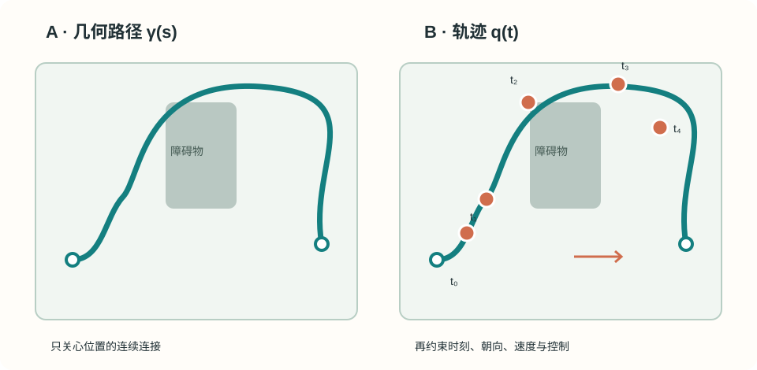
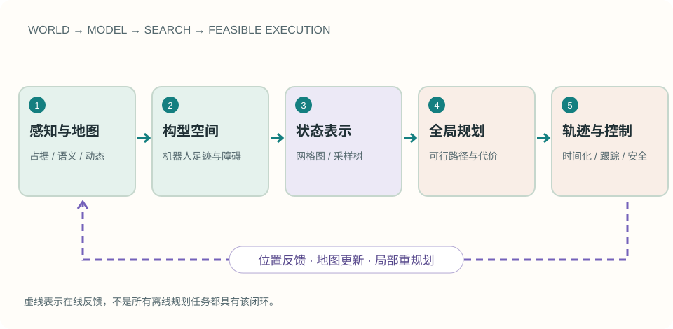
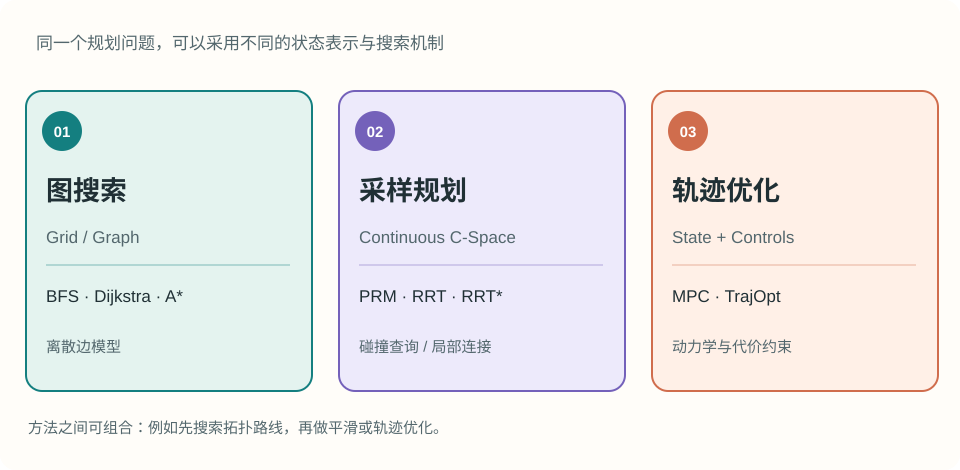

什么是路径规划？
一条从起点到终点的曲线，什么时候才算机器人真正能走的路？从问题定义、运动约束与代价函数开始，搭建规划的统一语言。
一条线为什么还不够
设想一台轮式机器人从仓库入口到达货架。二维地图上的两点之间，当然能画一条不穿过货架的曲线。但这条曲线可能穿过机器人自身的外轮廓、要求车体瞬间横移，或者在拐角处需要无限大的角速度。避开障碍、符合运动学、可被控制器跟踪是不同的条件。
路径规划首先回答：在允许的状态集合里，是否存在一条连续、无碰撞的连接？如果加上时间、速度、加速度以及动态障碍，问题就进入运动规划和轨迹规划的范畴。它们彼此相关，但不应混用。
ILLUSTRATION · 01

规划问题的五个对象
把任务形式化，可先定义状态/配置 q、起点 qs、目标集合 G、允许的自由空间 Cfree，以及评价路线的代价函数 J。路径是参数化曲线 γ:[0,1]→Cfree；若是带时间的轨迹，还需明确 q(t) 与系统动力学。
只要需要优化，就还要选择评价指标：长度、耗时、能耗、风险、舒适性或其加权组合。不同的代价函数通常产生不同的“最优路线”。对于运动规划，连续性与碰撞检查也不能仅靠网格端点保证。
概念边界：几何路径是空间顺序；轨迹增加时间参数；带动力学的运动规划还需符合状态转移方程及控制约束。术语在工程产品中可能存在重叠，使用时应说明自己的模型。
从地图到控制
完整的规划系统通常将真实世界的感知结果转换成配置空间中的可行区域，再构建图或采样结构，寻找候选路径，随后做曲率、速度和碰撞验证，最终交给控制器执行。下面将复杂流程拆成五个明确的接口。
ILLUSTRATION · 01

每个接口都有失败方式：传感器误标可能堵死走廊；分辨率过粗会漏掉薄障碍；启发式不匹配会浪费搜索；即使找出最短折线，转角也可能超出车辆最小转弯半径。因此评价算法前，应先锁定地图、机器人形状、运动原语和代价定义。
算法究竟分几类
一种有用的分类依据不是算法名字，而是它如何表示状态以及如何寻找连接。图搜索适用于已离散化的状态；采样法适用于连续或高维配置空间；优化法则直接调整带约束的连续轨迹。实践中经常混合这些思路。
ILLUSTRATION · 01

| 路线 | 常见方法 | 必须关注的假设 |
|---|---|---|
| 图搜索 | BFS、Dijkstra、A* | 节点/边是否忠实表示可行动作；边代价是否非负 |
| 采样法 | PRM、RRT、RRT* | 采样覆盖性、局部连接器、碰撞检测与维数 |
| 局部控制与优化 | DWA、MPC、轨迹优化 | 运动学/动力学、预测模型、实时性和局部最优 |
两个候选路线：短不等于好
假设走廊 A 只有 10 米，却紧贴高风险货架；走廊 B 有 13 米，但留出更多侧向空间。若目标仅是最短路，A 优于 B；若定义 J = 路程 + λ × 风险积分，就可能选择 B。这里的 10 与 13 是手算示例，不是对具体算法的实验性能结果。
最优性永远相对于事先定义的代价和约束。不能先按长度搜索、再声称所得结果同时最安全、最舒适、最节能。真实系统还需对动态障碍、定位误差和地图滞后提供安全余量。
一个可执行的最小规划器
先用四方向、单位边代价的二值网格，把“从起点到目标的可行路径”落实为可检验程序。BFS 按经过边数逐层扩展，所以在所有边代价相同且可走栅格已确定的条件下，首次到达目标时边数最少。运行环境：Python 3.10+，无外部依赖。
from collections import deque
def plan(grid, start, goal):
"""4 邻域、单位边代价、0 可走、1 障碍。"""
rows, cols = len(grid), len(grid[0])
def neighbors(p):
r, c = p
for dr, dc in ((-1,0),(0,1),(1,0),(0,-1)):
nr, nc = r+dr, c+dc
if 0 <= nr < rows and 0 <= nc < cols and grid[nr][nc] == 0:
yield (nr, nc)
assert grid[start[0]][start[1]] == 0
assert grid[goal[0]][goal[1]] == 0
queue = deque([start])
parent = {start: None} # 入队时标记
while queue:
u = queue.popleft()
if u == goal:
path = []
while u is not None:
path.append(u)
u = parent[u]
return path[::-1]
for v in neighbors(u):
if v not in parent:
parent[v] = u
queue.append(v)
return None
grid = [[0,0,0,0], [0,1,1,0], [0,0,0,0]]
path = plan(grid, (0,0), (2,3))
assert path[0] == (0,0) and path[-1] == (2,3)
assert len(path) - 1 == 5
print(path)该样例用断言检查路径端点和长度；如果 grid 中出现不同的移动代价，或允许斜向跨越，BFS 的“最短”就必须重新解释。第 3–7 章分别详解图表示、启发式与带权最短路。
算法能力与问题假设的边界
- 路径长度不等于行驶时间：速度曲线、曲率和安全减速可能改变比较。
- 无碰撞的点不等于无碰撞的车体：需要配置空间/足迹检查。
- 网格通行并不保证连续运动可行：斜向“切角”和轮式底盘转向限制是典型反例。
- 仿真成功不是实际部署证明：感知噪声、定位误差和执行偏差要另做验证。
更好的思维方式是每次写下：规划空间是什么？允许哪些动作？代价如何定义？碰撞如何判定？在什么条件下可以证明正确性或最优性？
延伸阅读与来源
本章术语与方法分类依据机器人规划教材与公开导航系统文档；示例和示意图是为教学重新构建的，不代表正式基准测试。